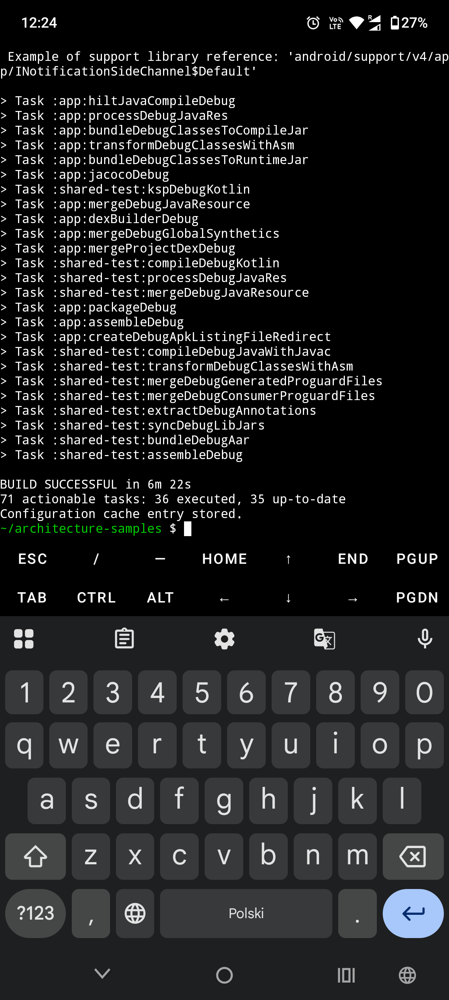

I use my phone on a daily basis for dozens of various things. This is truly my pocket computer that helps me with many different tasks. Since the first time I had an Android phone until nowadays, the flexibility of the platform has been very astonishing
Recently, I’ve learned about Termux - it is a UNIX terminal running on the phone. Yes, just directly on a mobile phone you have access to git, ssh, curl, and other terminal commands.
It is very powerful by itself to be able to connect to a remote server from a phone and do sth, but one thing came to my mind - whether it can be used to work on Android projects
With the AI boom, in many cases one even doesn’t need to open a text editor, and there are a bunch of CLI tools - Claude Code, Cursor, Gemini - that can help with modifying the code.
What is left is verification - which is overall better to have on CI, but why not try to do everything on the phone?
First of all, one should install Termux and update packages
pkg update && pkg upgrade
Next thing is JDK - right, after that you’ll have everything to run Java code on your phone. For me, that is quite insane by itself
pkg install openjdk-21
Next thing is Android CLI tools to build the app. Usually they are part of the Android Studio distribution, but we don’t need an IDE for that - only tools are enough.
Here we download tools, unpack them, and set required env variables
curl -O https://dl.google.com/android/repository/commandlinetools-linux-11076708_latest.zip
unzip commandlinetools-linux-*.zip -d $HOME/android-sdk
mkdir -p $HOME/android-sdk/cmdline-tools/latest
mv $HOME/android-sdk/cmdline-tools/bin \
$HOME/android-sdk/cmdline-tools/lib \
$HOME/android-sdk/cmdline-tools/NOTICE.txt \
$HOME/android-sdk/cmdline-tools/source.properties \
$HOME/android-sdk/cmdline-tools/latest/
echo 'export ANDROID_HOME=$HOME/android-sdk' >> ~/.bashrc
echo 'export PATH=$PATH:$ANDROID_HOME/cmdline-tools/latest/bin:$ANDROID_HOME/platform-tools:$ANDROID_HOME/build-tools/36.0.0' >> ~/.bashrc
source ~/.bashrc
Next we need to download platform and build tools and accept all licenses
sdkmanager "platforms;android-34" "build-tools;34.0.0" "platform-tools"
sdkmanager --licenses
Installing Gradle - that simple
pkg install gradle
And Termux version of aapt2. Android SDK has an aapt2 tool in the main distribution, but it is for Linux and Termux is not compatible with that version. So we need to download a native version of aapt2 and set up an override in Gradle to point to that new binary
apt install aapt2
mkdir -p ~/.gradle && echo 'android.aapt2FromMavenOverride=/data/data/com.termux/files/usr/bin/aapt2' >> ~/.gradle/gradle.properties
And here we have all the setup for building the app ready
Let’s get into the app. We’ll need to have a git package installed, then we clone the project (of course, better to set up SSH, but it will work the same way as everywhere, and as we are not going to push changes, we’ll use HTTPS)
pkg install git
git clone https://github.com/android/architecture-samples.git
cd architecture-samples
And now we can assemble the app (I had issues and lags when running a daemon, so disabled it for the sake of testing)
./gradlew assembleDebug --no-daemon
And it builds!

Right on your phone
(Say goodbye to your phone’s battery though, lol). Took around 6 minutes - not that great for a not that big project.
Next and last thing - install Gemini (termux-api is a package that will allow opening a browser for auth request)
pkg install termux-api
pkg install nodejs
npm install -g @google/gemini-cli
gemini
And voilà, follow setup and sign in for Gemini and you are now ready to work on Android projects from an Android phone.
Now you can have a workflow of giving tasks to Gemini along with verifying outputs right away.
Incredible, even though completely useless :)
I don’t think it will be useful to anybody, but I still find it quite fun.
And still Termux is quite powerful to do remote work via ssh on the go
Happy building!